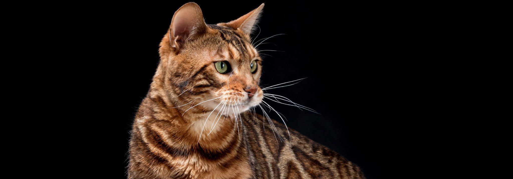

Призначений керівником відділу по роботі з клієнтами на залізничній станції Ліверпуль Саут Парквей в
 .
.
Чому я?
На мою сторінку в Facebook підписалось вже більше 3 тис.
Я знаю всі таємні ходи до їдальні тунелі станції.
Моя енергія E = m*C2.
Моя швидкість V = 3*108.
Мій кар’єрний шлях
Завів будинок і люблячих господарів.
Почав відвідувати станцію ще будучи маленьким кошеням.
Продовжую працювати вже 10 років.
Мої рекомендації
Ми раді вітати Пола на чолі відділу по роботі з клієнтами, адже він цього заслуговує - він дуже вихований кіт і все дуже люблять його.
Алан Роу
Особисті якості
Дружелюбний
Винахідливий
Везунчик
Спритний
© Пол, 2019
Контактів не залишаю, я сам вас знайду.
